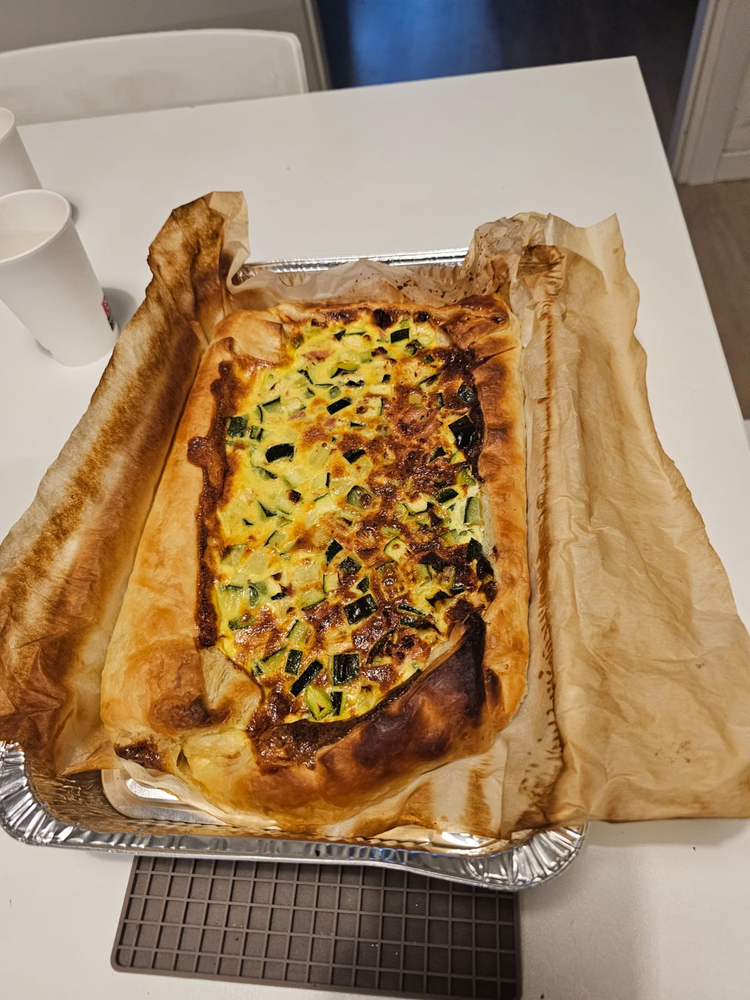

Torta salata zucchine, pancetta e formaggio

Ingredienti
- 1 rotolo di pasta sfoglia rettangolare
- 2 zucchine medie
- 100 g di pancetta affumicata a cubetti
- 100 g di formaggio a dadini (es. scamorza)
- 2 uova
- 100 ml di latte
- 2 cucchiai di parmigiano grattugiato
- Mezza cipolla (opzionale)
- Sale e pepe q.b.
- Olio extravergine di oliva
Procedimento
- Lavare e tagliare le zucchine a dadini o a rotelle.
- In una padella, scaldare un filo d'olio e rosolare la cipolla tritata (se usata).
- Aggiungere le zucchine, salare, pepare e cuocere per 5-7 minuti. Mettere da parte.
- Rosolare la pancetta in padella senza aggiungere grassi finché croccante. Scolare il grasso.
- In una ciotola sbattere le uova con il latte, poi aggiungere parmigiano, sale e pepe.
- Unire le zucchine, la pancetta e il formaggio a dadini. Mescolare bene.
- Stendere la pasta sfoglia con la carta forno in una teglia rettangolare.
- Bucherellare il fondo con una forchetta e versare il ripieno.
- Cuocere in forno statico a 180°C per 30-35 minuti, finché dorata.
- Lasciar intiepidire prima di tagliare a fette o quadrotti.